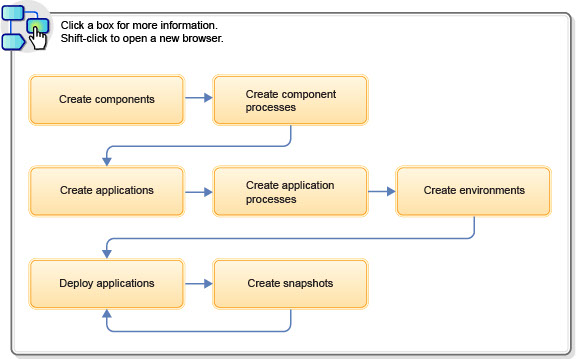

Modeling Software Deployment
Modeling software deployment in IBM DevOps Deploy (Deploy) includes configuring components and component processes and adding those components to applications. Then, you use processes to deploy the components to environments.
About this task
The general steps in this typical workflow include:
- Import the parts of the application as components. See Creating components.
- Create processes that deploy components. See Component processes.
- Create an application to group the components together. See Applications.
- Create an application process that runs each component process. See Creating application processes.
- Create one or more environments on which to deploy the components. See Creating environments.
- Run the application process to deploy the components. See Deploying applications.
- Take snapshots of working deployments so you can save these arrangements and deploy them to other environments. See Creating snapshots.
